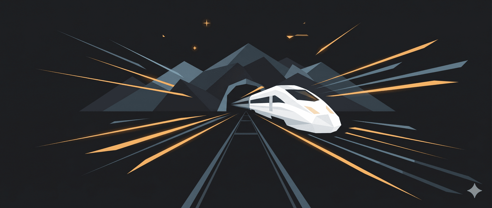

TẠI SAO NHẬT BẢN LÀ NƯỚC ĐẦU TIÊN KHAI PHÁ CÔNG NGHỆ ĐƯỜNG SẮT TỐC ĐỘ CAO?
Ngày 1 tháng 10 năm 1964, một đoàn tàu màu trắng xanh lướt êm khỏi ga Tokyo với tốc độ 210 km/h. Chín ngày sau, Thế vận hội Tokyo khai mạc trước mắt cả thế giới. Nhật Bản vừa thua trận hai mươi năm trước, giờ đây đang tuyên bố với nhân loại rằng họ đã trở lại.
Nhưng câu chuyện thực sự không bắt đầu từ vinh quang mà nó bắt đầu từ bế tắc.
Bài toán bế tắc của Nhật Bản hậu chiến
Khi tất cả các cánh cửa đều đóng
Hãy tưởng tượng nước Nhật những năm 1950. Một quốc gia hẹp và dài như con cá, với 70% diện tích là núi. Dân cư không sống rải rác mà chen chúc dọc theo một trục duy nhất, từ Tokyo xuống Osaka, qua Nagoya và Kyoto. Gần một nửa dân số, gần một nửa nền kinh tế, tất cả nằm trên dải đất 515 km này. Người Nhật gọi đó là hành lang Tokaido.
Và hành lang đó đang nghẹt thở.
Tuyến đường sắt Tokaido, xương sống của cả nước, đã quá tải nghiêm trọng. Tàu khách và tàu hàng chen chúc trên cùng đường ray, như một con đường hai làn xe nhưng phải gánh lưu lượng của xa lộ tám làn. Các chuyên gia tính toán rằng đến năm 1970, tuyến này sẽ hoàn toàn tê liệt. Không phải “có thể” tê liệt. Mà chắc chắn tê liệt.
Vậy tại sao không xây thêm đường bộ? Đất đâu? Nhật Bản không có đồng bằng mênh mông như nước Mỹ. Mỗi mét vuông đất bằng đều đã có chủ, đều đang được sử dụng. Núi non bao quanh như bức tường không thể vượt qua.
Tại sao không dựa vào hàng không? Tokyo đến Osaka chỉ 515 km, bay mất bốn mươi lăm phút, nhưng tính cả thời gian đến sân bay, check-in, chờ đợi, rồi từ sân bay vào trung tâm thành phố, tổng cộng mất ba bốn tiếng. Chưa kể chi phí xây sân bay cần diện tích khổng lồ mà Nhật không có.
Còn cải tiến đường sắt cũ thì sao? Đường sắt Nhật dùng khổ hẹp 1.067 mét, được chọn từ thời Minh Trị vì rẻ và phù hợp địa hình núi. Nhưng khổ hẹp có nghĩa trọng tâm tàu cao, chạy nhanh là lật. Các đoạn cua được thiết kế cho tốc độ 80 km/h, không thể chạy 200 km/h dù có muốn. Cải tiến từng phần là bất khả thi.
Nhật Bản đứng trước một bài toán không có lời giải thông thường. Tất cả các cánh cửa quen thuộc đều đóng. Và chính vì thế, họ buộc phải mở một cánh cửa hoàn toàn mới.
Shinji Sogō và ván cược vượt qua rào cản chính trị, đất đai
Những người đặt cược tất cả
Và rồi xuất hiện một nhân vật tên là Shinji Sogō trở thành người tiên phong của nước Nhật trong việc giải quyết bài toán to lớn này. Shinji Sogō không phải thiên tài kỹ thuật, ông là một nhà quản lý, một người hiểu chính trị và biết cách điều khiển hệ thống. Năm 1955, ở tuổi bảy mươi mốt, ông được bổ nhiệm làm Chủ tịch Đường sắt Quốc gia Nhật Bản. Nhiều người nghĩ đây là vị trí “ngồi chờ nghỉ hưu” nhưng Sogō nghĩ khác.
Ông nhìn thấy điều mà nhiều người không thấy. Hoặc không dám thấy. Đường sắt Nhật cần một cuộc cách mạng, không phải cải tiến. Cần một hệ thống hoàn toàn mới, với khổ đường tiêu chuẩn quốc tế 1.435 mét, với tốc độ 200 km/h, với công nghệ chưa từng tồn tại.
Vấn đề là không ai tin.
Bộ Tài chính cho rằng tiền nên dùng cho mục đích khác. Nhiều kỹ sư hoài nghi rằng 200 km/h là điều không thể. Chuyên gia phương Tây khẳng định đường sắt là công nghệ của quá khứ, tương lai thuộc về ô tô và máy bay. World Bank từ chối cho vay vì không tin vào tính khả thi.
Sogō đối mặt với bức tường phản đối từ mọi phía.
Ông dùng một chiến thuật mà về sau người ta gọi là “salami slicing”, cắt lát mỏng. Thay vì trình bày chi phí thực tế khoảng 380 tỷ yên, ông đưa ra con số 197 tỷ yên, gần như một nửa. Ông chia nhỏ dự án thành nhiều giai đoạn, trình bày từng phần một, đặt cược rằng một khi đã khởi công, không chính phủ nào dám dừng giữa chừng.
Đây có phải là lừa dối? Có thể nói vậy ở phương diện nào đó nhưng đó chắc chắn không phải là là sự dối có tính chất tư lợi, người đàn ông này đã làm mọi thứ vì lợi ích quốc gia. Đây có phải là cần thiết? Có lẽ. Sogō hiểu rằng trong một hệ thống quan liêu, những ý tưởng đột phá thường bị bóp chết từ trong trứng nước bởi những người sợ rủi ro. Đôi khi cách duy nhất để làm điều đúng là phải vượt qua những rào cản sai.
Rồi một cơ hội trời cho xuất hiện. Năm 1959, Tokyo được chọn đăng cai Thế vận hội 1964. Bỗng nhiên, Shinkansen không còn là “dự án đường sắt” nữa. Nó trở thành “thể diện quốc gia”. Ai dám phản đối khi cả thế giới sắp nhìn vào?
Sogō chớp lấy thời cơ, biến deadline Olympic thành deadline của Shinkansen. Năm năm. Chỉ có năm năm để xây dựng 515 km đường sắt cao tốc đầu tiên trong lịch sử nhân loại, với công nghệ chưa ai từng làm, qua địa hình 70% là núi.
Giải phóng mặt bằng: Khi quyền sở hữu tư nhân là thiêng liêng
Nhưng ở đây xuất hiện một thách thức mà ít người bên ngoài Nhật Bản hiểu. Nhật Bản là một nền dân chủ hậu chiến với hiến pháp bảo vệ quyền sở hữu tư nhân rất mạnh. Điều 29 của Hiến pháp Nhật Bản 1946 quy định rõ quyền sở hữu tài sản là bất khả xâm phạm. Luật thu hồi đất ở Nhật nổi tiếng là yếu so với các nước phương Tây.
Ở Mỹ, Anh, hay Úc, chính phủ có thể thu hồi đất cho mục đích công cộng với quy trình tương đối rõ ràng, miễn là đền bù hợp lý. Ở Nhật, quy trình này phức tạp hơn nhiều. Chính phủ phải thương lượng với từng chủ đất, và nếu chủ đất không đồng ý, việc cưỡng chế gần như bất khả thi.
Vụ xây dựng sân bay Narita về sau là ví dụ điển hình. Dự kiến mở cửa năm 1971, sân bay phải đến năm 1978 mới khánh thành vì các chủ đất phản đối kịch liệt, thậm chí dẫn đến bạo loạn. Dự án Roppongi Hills của tập đoàn Mori phải mất 14 năm chỉ để thu mua 400 mảnh đất nhỏ từ các chủ sở hữu.
Shinkansen phải thu hồi đất dọc theo 515 km, qua ruộng đồng, nhà cửa, nghĩa trang. Làm sao để hoàn thành trong năm năm khi luật pháp bảo vệ quyền sở hữu tư nhân như vậy?
Câu trả lời nằm ở sự kết hợp giữa áp lực thời gian, tinh thần tập thể, và cách tiếp cận thương lượng của người Nhật.
Đầu tiên, deadline Olympic tạo ra áp lực xã hội khổng lồ. Khi cả nước đang háo hức chuẩn bị cho sự kiện lớn nhất lịch sử, việc một cá nhân cản trở dự án quốc gia trở nên khó khăn về mặt xã hội. Không ai muốn bị hàng xóm coi là người gây cản trở.
Thứ hai, JNR triển khai đội ngũ thương lượng viên chuyên nghiệp đi từng nhà một, giải thích về dự án, lắng nghe quan ngại, và đưa ra các phương án đền bù linh hoạt. Không chỉ tiền mặt, mà còn có các lựa chọn như đất thay thế, nhà mới ở vị trí khác, hoặc thậm chí căn hộ trong các khu phức hợp mà JNR hỗ trợ xây dựng.
Thứ ba, thiết kế tuyến đường được điều chỉnh để giảm thiểu xung đột. Thay vì đi thẳng qua các khu dân cư đông đúc, Shinkansen sử dụng nhiều đoạn cầu cạn và đường hầm. Gần một nửa chiều dài tuyến là cầu hoặc hầm, đắt hơn nhiều nhưng giảm được lượng đất cần thu hồi.
Cuối cùng, tinh thần tập thể của người Nhật đóng vai trò quan trọng. Khái niệm “wa”chữ Hòa (和 ) tức hòa hợp trong văn hóa Nhật khuyến khích cá nhân nhường nhịn vì lợi ích chung. Khi một dự án được xác định là “vì quốc gia”, sự phản đối cá nhân trở nên khó khăn hơn về mặt tâm lý.
Dĩ nhiên, không phải mọi thứ đều suôn sẻ. Chi phí thu mua đất tăng vọt, góp phần đáng kể vào việc ngân sách đội lên gấp đôi. Một số đoạn phải điều chỉnh tuyến vào phút chót để tránh xung đột lớn. Nhưng cuối cùng, Shinkansen hoàn thành đúng hạn, điều mà nhiều dự án tương tự ở các nước khác không làm được.
Giải bài toán kỹ thuật và cuộc đua với thời gian
Những bức tường kỹ thuật
Hideo Shima, kỹ sư trưởng của dự án, đối mặt với hàng loạt vấn đề mà sách giáo khoa không có câu trả lời. Bởi vì chưa ai từng hỏi những câu hỏi này.
Làm sao giữ tàu ổn định ở 200 km/h? Không chỉ là vấn đề động cơ mạnh hay yếu. Ở tốc độ đó, mọi rung động nhỏ đều được khuếch đại. Một đường ray hơi cong, một mối nối hơi lệch, đều có thể gây thảm họa. Shima quyết định xây tuyến mới hoàn toàn với tiêu chuẩn khắt khe chưa từng có. Bán kính cong tối thiểu 2.500 mét, so với vài trăm mét của đường cũ. Độ dốc tối đa chỉ 2%. Mỗi mét đường ray được đo đạc với độ chính xác đến milimét.
Làm sao để lái tàu khi mọi thứ lướt qua như tia chớp? Ở 200 km/h, biển báo bên đường trở thành những vệt mờ vô nghĩa. Lái tàu không thể phản ứng kịp với bất kỳ tình huống nào. Giải pháp là ATC, Automatic Train Control, hệ thống truyền tín hiệu trực tiếp vào cabin qua đường ray. Tàu tự biết tốc độ cho phép phía trước, tự động phanh nếu vượt ngưỡng. Lái tàu trở thành người giám sát, không còn là người điều khiển. Đây là ý tưởng cách mạng mà phải mấy chục năm sau thế giới mới bắt kịp.
Làm sao lấy điện khi cần tiếp điện “nhảy múa” trên dây? Pantograph, cái cần kim loại lấy điện từ dây trên cao, ở tốc độ thường thì đơn giản. Ở 200 km/h, nó bắt đầu rung, bắt đầu nhảy, mất tiếp xúc với dây, tạo tia lửa điện. Kỹ sư Nhật phải thiết kế lại toàn bộ hệ thống treo dây điện, tính toán lực căng, góc nghiêng, vật liệu giảm chấn. Hàng nghìn giờ thử nghiệm để tìm ra thông số tối ưu.
Còn địa hình thì sao? Tuyến Tokaido phải xuyên qua núi, qua thung lũng, qua sông ngòi. Không thể đi vòng vì sẽ kéo dài quãng đường, mất lợi thế tốc độ. Giải pháp: 67 đường hầm với tổng chiều dài 70 km, hơn 3.000 cây cầu. Gần một nửa tuyến đường là cầu hoặc hầm. Chi phí khổng lồ, nhưng không có cách khác.
Và còn một vấn đề mà Nhật Bản hiểu hơn ai hết: động đất. Quốc gia này nằm trên vành đai lửa Thái Bình Dương, nơi mặt đất có thể rung chuyển bất cứ lúc nào. Một trận động đất khi tàu đang chạy 200 km/h là thảm họa không thể tưởng tượng. Shima và đội ngũ phát triển hệ thống cảnh báo động đất sớm, kết nối trực tiếp với ATC. Khi phát hiện sóng P, sóng động đất đi trước sóng phá hủy, hệ thống tự động phanh khẩn cấp tất cả các tàu trong vùng ảnh hưởng. Vài giây cảnh báo có thể là sự khác biệt giữa sống và chết.
Thành công của tập thể. Ba mươi nghìn người xây giấc mơ
Sẽ là sai lầm nếu chỉ tập trung vào Sogō và Shima. Shinkansen là thành công của một tập thể, của hàng nghìn kỹ sư, công nhân, nhà quản lý cùng làm việc với tinh thần không có phương án B.
Phía sau các kỹ sư trưởng là một đội quân thầm lặng. Đỉnh điểm có hơn 30.000 công nhân làm việc cùng lúc trên tuyến đường. Ca đêm, ca ngày, không ngừng nghỉ. Họ đào 67 đường hầm xuyên qua núi đá. Họ dựng hơn 3.000 cây cầu qua sông suối và thung lũng. Họ đặt từng thanh ray với độ chính xác milimét.
Điều kiện làm việc khắc nghiệt. Trong các đường hầm, không khí ngột ngạt, nhiệt độ cao, nguy cơ sập hầm luôn rình rập. Trên các công trường cầu, công nhân làm việc ở độ cao nguy hiểm, nhiều khi trong mưa gió. Tai nạn lao động xảy ra, có người thiệt mạng.
Nhưng họ vẫn tiếp tục. Vì deadline Olympic. Vì thể diện quốc gia. Vì họ biết rằng điều họ đang làm sẽ thay đổi Nhật Bản. Tinh thần này không thể mua bằng tiền. Nó đến từ một niềm tin chung rằng dự án này có ý nghĩa vượt xa một tuyến đường sắt. Đây là cách Nhật Bản chứng minh với thế giới rằng họ đã đứng dậy.
Có những câu chuyện nhỏ phản ánh tinh thần lớn. Các kỹ sư làm việc 16 giờ mỗi ngày trong nhiều tháng liền. Công nhân tự nguyện ở lại công trường qua đêm để kịp tiến độ. Các nhà thầu phối hợp với nhau một cách hiếm thấy, đặt mục tiêu chung lên trên lợi ích riêng. Văn hóa “kaizen” (cải tiến liên tục) được áp dụng triệt để, mỗi người đều tìm cách làm tốt hơn phần việc của mình.
Sáng tạo dưới áp lực
Một trong những điều đáng chú ý nhất về dự án Shinkansen là sự sáng tạo nở rộ dưới áp lực thời gian. Khi không có thời gian để đợi, khi không có phương án B, con người buộc phải nghĩ khác.
Để xây dựng nhanh hơn, các kỹ sư phát triển phương pháp “cấu kiện đúc sẵn” (prefabrication). Thay vì đổ bê tông tại chỗ cho từng trụ cầu, từng đoạn tường hầm, họ đúc sẵn trong nhà máy rồi vận chuyển đến công trường lắp ráp. Điều này giúp kiểm soát chất lượng tốt hơn, không phụ thuộc thời tiết, và rút ngắn thời gian đáng kể.
Để giảm rung động và tiếng ồn, nhóm thiết kế nền móng phát triển các giải pháp “lightweight foundation” (nền móng nhẹ). Đặc biệt quan trọng ở các đoạn đi qua khu dân cư, nơi tiếng ồn và rung động có thể gây phản đối mạnh từ cộng đồng.
Mỗi nhóm kỹ sư, mỗi bộ phận, đều phải sáng tạo trong phạm vi của mình. Và tất cả các sáng tạo nhỏ cộng lại thành một hệ thống lớn mà không ai đơn lẻ có thể tạo ra.
Cuộc chạy đua với thời gian
Ba mươi nghìn công nhân làm việc cùng lúc trên tuyến đường. Ca đêm, ca ngày, không ngừng nghỉ. Deadline Olympic không phải là thứ có thể thương lượng.
Nhưng vấn đề không chỉ là xây dựng. Nhiều công nghệ then chốt chưa tồn tại khi dự án khởi công. ATC, hệ thống phanh mới, pantograph cao tốc, tất cả đều đang được phát triển song song với việc đào hầm, đặt đường ray. Nếu công nghệ thất bại, hạ tầng đã xây cũng vô dụng.
Năm 1963, tàu thử nghiệm đạt 256 km/h. Vượt xa mục tiêu 210 km/h. Những người hoài nghi im lặng.
Nhưng chi phí thì không im lặng. Nó cứ leo thang, từ 197 tỷ yên lên 300 tỷ, rồi 350 tỷ, cuối cùng là gần 400 tỷ. Gấp đôi dự toán ban đầu. Sogō bị đưa ra trước Quốc hội để giải trình. Ông nhận mọi trách nhiệm, từ chức năm 1963, một năm trước khi công trình đời mình hoàn thành. Ngày 1 tháng 10 năm 1964, Shinkansen khánh thành. Sogō không được mời dự lễ.
Bài học từ tư duy hệ thống
Nhìn lại bằng lăng kính hệ thống
Bây giờ hãy dừng lại một chút và nhìn câu chuyện này từ góc độ khác. Không phải góc độ lịch sử, mà góc độ của tư duy hệ thống và khoa học phức hợp. Những người làm Shinkansen năm 1959 không biết đến những khái niệm này, bởi chúng chưa được hệ thống hóa. Thuật ngữ “complexity science” phải đến thập niên 1980 mới xuất hiện. Santa Fe Institute, trung tâm đầu tiên trên thế giới nghiên cứu về khoa học phức hợp đến tận năm 1984 mới được thành lập.
Nhưng điều kỳ lạ là, dù không biết lý thuyết, họ đã hành động đúng theo nhiều nguyên lý cốt lõi của tư duy hệ thống. Như thể trực giác và kinh nghiệm đã dẫn họ đến những nơi mà lý thuyết phải mất thêm hai mươi năm mới đặt tên.
Họ nhận ra đâu là điểm đòn bẩy thực sự.
Donella Meadows, một trong những người tiên phong của tư duy hệ thống, từng viết về “leverage points”, những điểm trong hệ thống mà nếu can thiệp đúng, sẽ tạo ra thay đổi lớn với nỗ lực nhỏ. Bà xếp hạng các điểm đòn bẩy từ thấp đến cao. Thay đổi thông số (như tăng tốc độ tàu) là mức thấp. Thay đổi cấu trúc hệ thống là mức cao.
Những người làm Shinkansen không cố tăng tốc độ tàu trên đường ray cũ. Họ không cố mở rộng đường ray cũ. Họ không cố cải tiến hệ thống tín hiệu cũ. Họ nhận ra rằng khổ đường 1.067 mét là một constraint cứng, một giới hạn không thể vượt qua bằng tối ưu hóa từng phần. Cách duy nhất là xây hệ thống mới hoàn toàn.
Đây là can thiệp ở mức cao nhất của thang đòn bẩy: thay đổi cấu trúc. Họ thiết kế để loại bỏ nguồn gốc vấn đề, không phải xử lý triệu chứng.
Trong kỹ thuật an toàn hiện đại, có một nguyên lý gọi là “intrinsic safety”, an toàn nội tại. Thay vì thiết kế hệ thống nguy hiểm rồi thêm các biện pháp bảo vệ, hãy thiết kế để nguy hiểm không thể xảy ra ngay từ đầu.
Shinkansen không cố thiết kế phanh tốt hơn để dừng kịp khi có chướng ngại vật. Họ thiết kế tuyến đường không có chướng ngại vật. Khép kín hoàn toàn. Không giao cắt đồng mức với đường bộ. Hàng rào bảo vệ toàn tuyến. Người và xe không có cách nào xâm nhập. Nguồn gốc của tai nạn bị loại bỏ, không phải được quản lý.
Đây là tư duy mà phải đến thập niên 1980, ngành công nghiệp hóa chất sau hàng loạt thảm họa mới bắt đầu áp dụng rộng rãi.
Họ xây dựng redundancy, khả năng chịu lỗi.
Một nguyên lý cơ bản của hệ thống phức hợp là không bao giờ để một điểm đơn lẻ có thể làm sụp đổ toàn bộ. Trong tiếng Anh gọi là “single point of failure”. Nếu có một bộ phận mà khi nó hỏng, cả hệ thống chết theo, thì hệ thống đó mong manh.
Tàu truyền thống dùng một đầu máy kéo cả đoàn. Đầu máy hỏng, cả đoàn tàu đứng im. Shinkansen dùng động lực phân tán, mỗi toa đều có động cơ. Một động cơ hỏng, tàu vẫn chạy. Hai động cơ hỏng, tàu vẫn chạy. Hệ thống được thiết kế để suy giảm từ từ thay vì sụp đổ đột ngột.
Nguyên lý này ngày nay là tiêu chuẩn trong thiết kế hệ thống quan trọng, từ máy bay đến data center. Năm 1959, nó là trực giác của những kỹ sư biết sợ thất bại. Họ chọn tight coupling có chủ đích, với đầy đủ biện pháp đền bù. Hệ thống “tightly coupled” là hệ thống mà các thành phần phụ thuộc chặt chẽ vào nhau, thay đổi một phần ảnh hưởng ngay đến phần khác. Điều này nguy hiểm vì lỗi lan truyền nhanh. Nhưng nó cũng cho phép kiểm soát và tối ưu hóa tốt hơn.
Shinkansen là hệ thống tightly coupled. ATC, đường ray, toa xe, điều độ trung tâm đều phụ thuộc lẫn nhau. Một tàu trễ ảnh hưởng cả hệ thống. Một lỗi tín hiệu ảnh hưởng toàn tuyến.
Nhưng họ đền bù bằng cách loại bỏ triệt để các nguồn nhiễu từ bên ngoài. Tuyến khép kín nghĩa là môi trường được kiểm soát hoàn toàn. Khi không có yếu tố bất ngờ từ bên ngoài, tight coupling trở thành lợi thế thay vì rủi ro. Đây là trade-off tinh vi mà nhiều nhà quản lý hệ thống ngày nay vẫn chưa hiểu rõ.
Những gì họ chưa làm được
Nhưng sẽ không công bằng nếu chỉ ca ngợi. Những người làm Shinkansen cũng mắc sai lầm, hoặc đúng hơn, có những điều họ không lường trước được. Không phải vì họ kém, mà vì giới hạn của hiểu biết thời đại.
Họ không lường trước emergence, những tính chất trồi sinh từ tương tác.
Khoa học phức hợp dạy chúng ta rằng trong hệ thống phức tạp, khi các thành phần tương tác với nhau, những tính chất mới xuất hiện mà không thành phần đơn lẻ nào có. Đàn kiến xây tổ phức tạp mà không con nào có bản vẽ. Ý thức trồi sinh từ neurons nhưng không neuron nào biết nghĩ. Kẹt xe là emergence, không ai muốn kẹt nhưng tập thể tạo ra kẹt.
Khi Shinkansen chạy thật, những vấn đề emergence xuất hiện. Không ai dự đoán được hiện tượng “tunnel boom”. Khi tàu vào đường hầm ở tốc độ cao, không khí bị nén tạo sóng xung kích. Sóng này chạy trước tàu trong hầm, và khi thoát ra đầu kia, tạo tiếng nổ lớn như đại bác. Người dân sống gần cửa hầm phải chịu đựng tiếng ồn mà không ai lường trước.
Tiếng ồn khí động học cũng là emergence. Pantograph, khe giữa các toa, mũi tàu, mỗi thứ đều tạo tiếng ồn theo cách không dự đoán được ở tốc độ cao. Tổng tiếng ồn không phải là phép cộng đơn giản, mà là kết quả của tương tác phức tạp giữa các nguồn. Phải mất nhiều thế hệ tàu để giải quyết từng vấn đề một, thông qua thử nghiệm và quan sát.
Nếu họ biết về emergence, họ sẽ hiểu rằng dù mô phỏng cẩn thận đến đâu, thực tế luôn có bất ngờ. Họ sẽ thiết kế hệ thống linh hoạt hơn để thích ứng, thay vì cố dự đoán hết.
Họ quản lý chi phí theo logic tuyến tính
Sogō ước tính chi phí bằng cách cộng các hạng mục: đường ray bao nhiêu, hầm bao nhiêu, cầu bao nhiêu, toa xe bao nhiêu. Ông giả định các phần độc lập với nhau.
Nhưng trong hệ thống phức hợp, phi tuyến tính là bản chất. Các phần tương tác với nhau, thay đổi một yếu tố kéo theo thay đổi nhiều yếu tố khác. Khi phát hiện vấn đề với nền đất yếu, không chỉ chi phí gia cố tăng, mà cả thiết kế cầu cạn phải thay đổi, kéo theo vật liệu, phương pháp thi công, thời gian. Các chi phí không cộng tuyến tính, chúng nhân lên, đan xen, khuếch đại lẫn nhau.
Chi phí đội lên gấp đôi không phải vì ai tính sai. Mà vì bản chất phi tuyến của hệ thống phức hợp không thể model bằng phép cộng đơn giản.
Họ không lường trước hậu quả kinh tế xã hội.
Shinkansen được kỳ vọng sẽ phát triển đều các thành phố dọc tuyến. Thực tế, nó tạo ra “hiệu ứng Tokyo”. Khi di chuyển nhanh và tiện, người ta không cần sống ở các thành phố nhỏ nữa. Họ có thể làm việc ở Tokyo và về trong ngày. Nhân tài, vốn, cơ hội đổ dồn về Tokyo. Các thành phố nhỏ dọc tuyến thay vì phát triển, lại bị hút nguồn lực.
Đây là ví dụ kinh điển về unintended consequences, hậu quả không chủ ý. Trong tư duy hệ thống, đây là điều gần như không thể tránh khỏi khi can thiệp vào hệ thống phức hợp. Giải quyết một vấn đề thường tạo ra vấn đề khác ở nơi không ngờ tới.
Nếu họ nghĩ theo hệ thống, họ sẽ hỏi: “Shinkansen sẽ thay đổi cách con người và doanh nghiệp ra quyết định như thế nào? Và điều đó sẽ dẫn đến hậu quả gì cho cấu trúc kinh tế và xã hội?”
Có lẽ họ vẫn sẽ xây Shinkansen. Nhưng họ sẽ chuẩn bị tốt hơn cho những thay đổi mà nó mang lại.
So sánh Nhật Bản 1959 và Việt Nam hiện tại
Bài học cho Việt Nam
Việt Nam đang đứng trước bài toán tương tự Nhật Bản năm 1959. Một đất nước hẹp và dài, dân cư tập trung dọc theo trục Bắc Nam, hệ thống đường sắt cũ kỹ từ thời thuộc địa với khổ hẹp 1.000 mét, tốc độ trung bình chỉ 50 km/h. Hành trình 1.700 km từ Hà Nội đến TP.HCM mất hơn 30 tiếng bằng tàu hỏa.
Nhưng có những điểm giống và khác quan trọng mà Việt Nam cần hiểu rõ trước khi học hỏi.
Điểm giống
Cả hai đều có địa lý hẹp và dài với hành lang dân cư tập trung. Cả hai đều có đường sắt khổ hẹp không thể nâng cấp cho tốc độ cao. Cả hai đều cần kết nối hai đầu kinh tế của đất nước (Tokyo-Osaka với Hà Nội-TP.HCM). Và cả hai đều phải đối mặt với địa hình phức tạp, nhiều núi, sông, đồng bằng ven biển.
Điểm khác
Về thời điểm và vị thế người đi sau
Nhật Bản năm 1959 là người đi tiên phong, không có ai để học hỏi. Mọi công nghệ phải tự phát triển từ đầu.
Việt Nam năm 2025 đi sau sáu mươi năm. Đây là lợi thế lớn. Có thể học từ kinh nghiệm của hơn 20 quốc gia đã có đường sắt cao tốc. Biết về tunnel boom, về hiệu ứng tập trung đô thị, về các vấn đề kỹ thuật mà Nhật phải mất nhiều năm mới phát hiện. Có thể tiếp cận công nghệ mới nhất thay vì tự phát triển.
Nhưng cũng là thách thức. Kỳ vọng cao hơn. Thế giới đã biết đường sắt cao tốc là gì, nên dung sai cho sai sót thấp hơn. Phải cạnh tranh với các phương tiện khác đã phát triển. Và phải chọn lựa giữa nhiều nhà cung cấp công nghệ với các điều kiện chính trị và kinh tế khác nhau.
Về nguồn lực kỹ thuật
Nhật Bản năm 1959 đã có nền công nghiệp cơ khí và điện tử phát triển, có đội ngũ kỹ sư được đào tạo bài bản từ thời Minh Trị. Shima và đồng nghiệp không phải học từ nước ngoài, họ tự phát triển công nghệ dựa trên nền tảng sẵn có.
Việt Nam chưa có ngành công nghiệp đường sắt. Chưa có đội ngũ chuyên gia bản địa về đường sắt cao tốc. Điều này có nghĩa phụ thuộc nhiều vào công nghệ và nhân lực nước ngoài, ít nhất trong giai đoạn đầu.
Về áp lực và động lực
Nhật Bản có deadline Olympic, có nhu cầu chứng minh sự hồi sinh sau chiến tranh, có tuyến đường sắt cũ thực sự quá tải đến mức khủng hoảng. Áp lực từ mọi phía dồn vào, tạo ra năng lượng khổng lồ.
Việt Nam có áp lực phát triển nhưng không có deadline cứng như Olympic, không có khủng hoảng cấp bách như Nhật năm 1959. Đường bộ cao tốc và hàng không nội địa đang hoạt động, dù chưa tối ưu. Điều này có thể làm giảm động lực cấp bách.
Về chế độ chính trị và giải phóng mặt bằng
Đây là điểm khác biệt thú vị nhất.
Nhật Bản là nền dân chủ với quyền sở hữu tư nhân được bảo vệ mạnh, phải thương lượng với từng chủ đất. Điều này khiến giải phóng mặt bằng khó khăn và tốn kém, nhưng cũng buộc dự án phải tìm giải pháp sáng tạo (như dùng nhiều cầu cạn và hầm để giảm đất thu hồi).
Việt Nam có cơ chế thu hồi đất mạnh hơn theo luật. Nhà nước có quyền thu hồi đất cho mục đích công cộng với đền bù. Trên lý thuyết, điều này giúp giải phóng mặt bằng nhanh hơn.
Nhưng thực tế phức tạp hơn. Dù luật cho phép, việc thực thi vẫn gặp nhiều khó khăn. Đền bù không thỏa đáng dẫn đến khiếu kiện kéo dài. Một số dự án lớn ở Việt Nam đã bị chậm nhiều năm vì vấn đề giải phóng mặt bằng.
Bài học từ Nhật Bản là: dù có quyền lực thu hồi đất, việc thương lượng công bằng và đền bù thỏa đáng vẫn quan trọng. Không chỉ vì đạo đức, mà vì sự phản đối xã hội có thể làm chậm dự án và tăng chi phí hơn nhiều so với chi phí đền bù tốt ngay từ đầu.
Về tài chính
Dự án Shinkansen năm 1959 có vốn vay World Bank 80 triệu USD và ngân sách quốc gia. Chi phí ban đầu dự kiến 200 tỷ yên, thực tế lên gần 400 tỷ yên.
Dự án đường sắt cao tốc Việt Nam ước tính 67 tỷ USD. Quốc hội đã quyết định không dùng vốn vay nước ngoài mà tự tài trợ bằng ngân sách, trái phiếu chính phủ và vốn vay trong nước. Đây là quyết định táo bạo theo tinh thần “độc lập, tự chủ”, nhưng cũng tạo áp lực lớn lên ngân sách quốc gia.
So sánh: Chi phí Shinkansen năm 1964 bằng khoảng 1% GDP Nhật Bản thời đó. Chi phí đường sắt cao tốc Việt Nam bằng khoảng 15-17% GDP hiện tại. Tỷ lệ cao hơn đáng kể, đòi hỏi quản lý tài chính cẩn thận.
Bài học và khuyến nghị cho Việt Nam
Những bài học có thể áp dụng
Bài học 1: Tạo deadline rõ ràng và gắn với mục tiêu lớn hơn
Deadline Olympic của Nhật không chỉ là mốc thời gian. Nó là biểu tượng, là động lực tinh thần, là lý do để mọi người vượt qua giới hạn bình thường.
Nếu bắt đầu Việt Nam cần một deadline tương tự. Có thể là một sự kiện quốc tế lớn, có thể là mục tiêu chiến lược như “trước năm 2035 hoàn thành”, có thể là cam kết chính trị cấp cao nhất. Điều quan trọng là deadline phải đủ cứng để không ai dám trì hoãn, nhưng đủ thực tế để có thể đạt được.
Và deadline cần được gắn với ý nghĩa lớn hơn. Không chỉ là “xây đường sắt”, mà là “bước vào kỷ nguyên mới của đất nước”, “kết nối hai đầu tổ quốc”, “hiện đại hóa hạ tầng cho thế hệ tương lai”. Ý nghĩa tạo động lực.
Bài học 2: Thành công là của tập thể, không phải vài cá nhân
Shinkansen không phải thành công của riêng Sogō hay Shima. Nó là thành công của hàng chục nghìn người, từ kỹ sư đến công nhân, từ nhà quản lý đến người dân chấp nhận nhường đất.
Dự án đường sắt cao tốc Việt Nam cũng sẽ cần sự đóng góp của toàn xã hội. Không chỉ tiền ngân sách, mà còn sự hy sinh của những người bị ảnh hưởng bởi giải phóng mặt bằng, sự kiên nhẫn của người dân sống gần công trường, sự cống hiến của những người trực tiếp xây dựng.
Cần có cơ chế để ghi nhận và đền đáp những đóng góp này. Không chỉ bằng tiền, mà bằng sự tôn trọng, bằng việc đảm bảo họ được hưởng lợi từ dự án sau này.
Bài học 3: Phát triển ngành công nghiệp phụ trợ song song**
Nhật Bản năm 1959 đã có nền công nghiệp có thể sản xuất thép, xi măng, thiết bị điện. Việt Nam chưa có ngành công nghiệp đường sắt. Nếu toàn bộ vật liệu và thiết bị phải nhập khẩu, chi phí sẽ cao và phụ thuộc nước ngoài mãi mãi.
Dự án đường sắt cao tốc nên được xem là cơ hội để phát triển các ngành công nghiệp phụ trợ trong nước. Sản xuất ray, dầm cầu, cấu kiện bê tông, thiết bị tín hiệu. Kinh nghiệm Nhật Bản cho thấy họ chú trọng dùng cấu kiện đúc sẵn, sản xuất trong nhà máy rồi lắp ráp tại công trường. Đây là hướng Việt Nam có thể đi theo.
Điều này đòi hỏi quy hoạch dài hạn và đầu tư vào đào tạo nhân lực ngay từ bây giờ, không phải đợi đến khi dự án khởi công.
Bài học 4: Chuẩn bị cho emergence và unintended consequences
Nhật Bản không lường trước tunnel boom và hiệu ứng Tokyo. Việt Nam cần học từ điều này. Dù quy hoạch cẩn thận đến đâu, sẽ có những vấn đề chỉ xuất hiện khi hệ thống vận hành thật. Đây không phải thất bại của kế hoạch, mà là bản chất của hệ thống phức hợp.
Cần thiết kế hệ thống linh hoạt để có thể điều chỉnh. Cần dự trù ngân sách cho các vấn đề không lường trước (ít nhất 15-20% tổng ngân sách). Cần cơ chế phản hồi nhanh để phát hiện và xử lý vấn đề sớm.
Về hậu quả kinh tế xã hội, cần nghiên cứu kỹ hiệu ứng có thể xảy ra. Liệu đường sắt cao tốc có làm Hà Nội và TP.HCM hút hết nguồn lực từ các tỉnh dọc đường? Liệu các thành phố trung gian như Vinh, Đà Nẵng, Nha Trang có được hưởng lợi hay bị bỏ lại phía sau? Cần có chính sách đi kèm để đảm bảo phát triển cân bằng.
Những điều Việt Nam cần làm khác
Không nên ảo tưởng về thời gian
Nhật Bản hoàn thành trong năm năm với áp lực Olympic, với nền công nghiệp sẵn sàng, với đội ngũ kỹ sư bản địa. Việt Nam không có những điều kiện đó.
Tuyến Shinkansen đầu tiên dài 515 km. Tuyến đường sắt cao tốc Việt Nam dài 1.541 km, gấp ba lần. Địa hình dọc bờ biển miền Trung phức tạp với nhiều đèo núi và sông suối.
Thà đặt mục tiêu thực tế và hoàn thành đúng hạn, còn hơn đặt mục tiêu tham vọng rồi liên tục trì hoãn. Mỗi lần trì hoãn làm giảm niềm tin của công chúng và tăng chi phí.
Cần chiến lược chuyển giao công nghệ rõ ràng
Nhật Bản tự phát triển công nghệ vì không có ai để học. Việt Nam có thể mua công nghệ từ Nhật, Trung Quốc, hoặc châu Âu. Nhưng mua công nghệ không đồng nghĩa với làm chủ công nghệ.
Cần cam kết rõ ràng về chuyển giao công nghệ trong các hợp đồng. Cần lộ trình đào tạo nhân lực để dần dần nội địa hóa vận hành, bảo trì, và cuối cùng là chế tạo. Việt Nam đã yêu cầu Nhật Bản cung cấp học bổng đào tạo kỹ sư đường sắt. Đây là hướng đi đúng, cần mở rộng và hệ thống hóa.
Nếu không, Việt Nam sẽ phụ thuộc nước ngoài vĩnh viễn cho mọi hoạt động từ vận hành đến sửa chữa.
Cần cân nhắc kỹ lựa chọn đối tác
Nhật Bản không phải chọn đối tác vì họ tự làm. Việt Nam phải chọn, và đây là quyết định có hệ quả địa chính trị dài hạn.
Việt Nam đã quyết định tự tài trợ và giữ quyền chủ động trong lựa chọn đối tác. Đây là hướng đi khôn ngoan, cho phép đàm phán từ vị thế mạnh hơn.
Lợi thế của người đi sau
Cuối cùng, cần nhắc lại rằng đi sau không phải là bất lợi hoàn toàn.
Việt Nam có thể học từ sáu mươi năm kinh nghiệm của thế giới. Biết được những lỗi nào cần tránh, những giải pháp nào đã được chứng minh hiệu quả. Biết về tunnel boom trước khi nó xảy ra. Biết về hiệu ứng tập trung đô thị trước khi nó xuất hiện.
Việt Nam có thể tiếp cận công nghệ mới nhất thay vì phải tự phát triển từ đầu. Hệ thống tín hiệu ETCS tiên tiến hơn ATC đời đầu. Vật liệu composite nhẹ và bền hơn thép truyền thống. Thiết kế toa xe tối ưu hơn sau nhiều thế hệ cải tiến.
Việt Nam có thể học cách quản lý dự án lớn từ kinh nghiệm các nước. Từ cách Pháp xây TGV, cách Trung Quốc mở rộng mạng lưới với tốc độ chưa từng có, cách Đài Loan và Hàn Quốc tiếp nhận công nghệ Nhật rồi dần nội địa hóa.
Điều quan trọng là biến lợi thế này thành hiện thực, không chỉ trên giấy.
Kết luận: Sáu mươi năm sau ngày khánh thành, Shinkansen vẫn chưa có một ca tử vong nào do tai nạn tàu trong vận hành. Hơn 10 tỷ lượt hành khách đã được chở an toàn. Độ trễ trung bình hàng năm tính bằng giây, không phải phút.
Đây không phải là may mắn. Đây là kết quả của một hệ thống được thiết kế bởi những người hiểu, dù không có từ ngữ để gọi tên, rằng an toàn không đến từ việc xử lý triệu chứng mà đến từ việc loại bỏ nguồn gốc vấn đề. Rằng hệ thống phức hợp cần redundancy và khả năng thích ứng. Rằng thành công lớn là thành công của tập thể, không phải của vài cá nhân. Rằng đôi khi cách duy nhất để tiến về phía trước là xây một con đường hoàn toàn mới.
Sogō qua đời năm 1981, được phục hồi danh dự như một anh hùng quốc gia. Shima tiếp tục làm việc, chuyển sang lãnh đạo chương trình không gian của Nhật Bản, và mất năm 1998 ở tuổi 96. Cả hai đều sống đủ lâu để thấy Shinkansen trở thành biểu tượng của nước Nhật hiện đại.
Câu chuyện của họ nhắc nhở chúng ta rằng đổi mới đột phá không đến từ nơi có nhiều nguồn lực nhất. Nó đến từ nơi bị dồn vào góc tường và buộc phải tìm lối thoát. Nó đến từ những người nhìn thấy điều người khác không thấy, hoặc không dám thấy. Nó đến từ sự dũng cảm đặt cược tất cả vào một ý tưởng mà phần còn lại của thế giới cho là điên rồ. Và nó đến từ tinh thần tập thể của cả một dân tộc sẵn sàng làm việc cùng nhau vì mục tiêu chung.
Việt Nam hôm nay cần làm gì để từ Nhật Bản năm 1959?
Không phải học cách copy một dự án. Mà học cách tư duy. Học cách nhận ra khi nào cần thay đổi cấu trúc thay vì chỉ tối ưu hóa. Học cách tạo động lực tập thể cho mục tiêu lớn. Học cách chấp nhận rủi ro có tính toán. Học cách xây dựng đội ngũ sẵn sàng cống hiến vì điều lớn hơn bản thân. Và quan trọng nhất, học cách biến khó khăn thành động lực thay vì lý do để bỏ cuộc.
Và Việt Nam có lợi thế mà Nhật Bản năm 1959 không có: sáu mươi năm kinh nghiệm của thế giới để học hỏi, công nghệ hiện đại để tiếp cận, và một thế hệ trẻ khao khát chứng minh đất nước có thể làm được những điều lớn lao. Và nếu biết học từ những người đã đi trước ta sẽ tiết kiệm được nhiều xương máu, mồ hôi của chính mình.
🔍 Phân tích bài viết
📌 Tóm tắt ý chính
Nhật Bản xây Shinkansen không phải vì có nguồn lực dồi dào, mà vì bị dồn vào góc tường — hành lang Tokaido quá tải tuyệt đối, không có đất mở rộng, không thể nâng cấp đường cũ. Shinji Sogō dùng deadline Olympic 1964 như đòn bẩy chính trị để thúc đẩy dự án bất chấp hoài nghi. Thành công đến từ quyết định thay đổi toàn bộ cấu trúc hệ thống thay vì tối ưu hóa từng phần, cộng với tinh thần tập thể 30.000 người không có phương án B. Sau 60 năm vận hành, Shinkansen đạt kỳ tích an toàn tuyệt đối — 0 tử vong, độ trễ tính bằng giây — minh chứng cho thiết kế loại bỏ nguy hiểm từ gốc thay vì chỉ quản lý triệu chứng.
🗺️ Mindmap
💡 Insight & Góc nhìn đa chiều
Sự bức bách là mẹ của đổi mới — nhưng phải là bức bách đúng loại. Nhật Bản không có lựa chọn nào khác, điều đó loại bỏ tâm lý “làm từ từ, cải tiến dần”. Nhiều nước có đủ tài nguyên hơn nhưng không tạo ra Shinkansen vì họ luôn còn “phương án B” để trì hoãn.
Chiến thuật salami slicing của Sogō là case study về cách đẩy đổi mới qua hệ thống quan liêu. Ông biết rằng nếu trình bày đúng chi phí thực (gấp đôi), dự án sẽ chết trong phòng họp. Điều này đặt câu hỏi thực dụng: trong các tổ chức lớn, đôi khi “nói thật toàn bộ ngay từ đầu” không phải cách tiếp cận duy nhất để làm được việc đúng.
Ai được lợi: Toàn bộ hành lang Tokaido, các đô thị lớn, doanh nghiệp Nhật, ngành du lịch, và Nhật Bản như một thương hiệu quốc gia. Ai bị thiệt: Các chủ đất dọc tuyến (dù được đền bù), Sogō bản thân (từ chức, không được mời dự lễ khánh thành), và các thành phố nhỏ dọc tuyến bị “hút máu” về Tokyo — hậu quả không lường trước nhưng có hệ thống.
Hiệu ứng Tokyo là bài học kinh tế đô thị quan trọng: Cơ sở hạ tầng kết nối tốt không tự động tạo ra phát triển đồng đều — nó thường tăng tốc tập trung hóa về các trung tâm mạnh nhất.
⚖️ Phản biện
1. “Bức bách buộc đổi mới” là câu chuyện viết lại sau khi thành công. Vô số quốc gia, công ty bị dồn vào góc tường và thất bại thảm hại, không phải đột phá. Điều làm Nhật Bản khác biệt không chỉ là hoàn cảnh, mà còn là năng lực kỹ thuật tích lũy từ thời Minh Trị — bài viết nhắc nhở điều này ở phần “bài học cho VN” nhưng lại không đủ nặng trong phần ca ngợi Nhật.
2. Bài viết đánh giá quá nhẹ chi phí xã hội của “tinh thần tập thể”. Văn hóa wa (和) giúp giải phóng mặt bằng nhanh hơn, nhưng cũng có nghĩa nhiều chủ đất chấp nhận điều kiện không công bằng vì áp lực xã hội, không phải vì được đền bù thỏa đáng thực sự. Đây là điểm tối mà bài viết xử lý theo hướng “tích cực hóa”.
3. So sánh chi phí 1% GDP (Nhật) vs 15–17% GDP (VN) cần bối cảnh. Nhật 1964 có nền công nghiệp tự cung cấp phần lớn vật liệu và thiết bị — nên tiền “chảy vòng vòng” trong nền kinh tế. Việt Nam sẽ nhập khẩu phần lớn công nghệ, nghĩa là tiền chảy ra ngoài, gánh nặng thực tế nặng hơn tỷ lệ GDP nhiều.
4. Bài viết ngầm ủng hộ quyết định tự tài trợ của VN (“hướng đi khôn ngoan”) nhưng không phân tích rủi ro: nếu dự án trễ tiến độ hoặc chi phí đội gấp đôi như Shinkansen, áp lực tài chính nội địa sẽ lớn hơn nhiều so với nếu dùng vốn ODA.
❓ Câu hỏi mở
Hiệu ứng tập trung đô thị là không thể tránh khỏi với đường sắt cao tốc, hay có chính sách nào thực sự ngăn được nó? Hàn Quốc và Đài Loan cũng trải qua hiệu ứng tương tự sau khi có KTX/HSR — vậy Việt Nam có thể làm gì khác hay chỉ cần chấp nhận và quản lý hậu quả?
Chiến lược “tự tài trợ” của VN là dấu hiệu tự chủ hay là rào cản tự tạo ra cho chính mình? Nếu dự án gặp vấn đề, VN có đủ thể chế và năng lực tài chính để xử lý mà không cần “giải cứu” quốc tế không?
Khi không có một “deadline Olympic” rõ ràng, liệu Việt Nam có tạo được động lực tập thể đủ mạnh để hoàn thành đúng hạn không — hay đây sẽ là dự án kinh điển bị trễ nhiều năm như đường sắt Cát Linh – Hà Đông?
🇻🇳 Liên hệ Việt Nam
Dự án đường sắt cao tốc Bắc–Nam 1.541 km (~67 tỷ USD) đang được Quốc hội thông qua chủ trương — đây là dự án hạ tầng lớn nhất lịch sử VN, gấp nhiều lần so với bất kỳ dự án nào trước đó.
Ngành sản xuất và chuỗi cung ứng: Nếu VN không có chiến lược phát triển công nghiệp phụ trợ (sản xuất ray, dầm cầu, cấu kiện bê tông đúc sẵn, thiết bị tín hiệu), toàn bộ chuỗi cung ứng sẽ rơi vào tay nhà thầu nước ngoài — Nhật, Trung Quốc, hoặc châu Âu. Đây là cơ hội để nội địa hóa nếu có quy hoạch ngay từ bây giờ.
Thị trường lao động: Giai đoạn thi công sẽ tạo ra hàng trăm nghìn việc làm xây dựng. Nhưng vận hành đường sắt cao tốc đòi hỏi đội ngũ kỹ sư chuyên sâu mà VN hiện chưa có — nếu không đào tạo ngay, phụ thuộc nhân lực nước ngoài sẽ kéo dài nhiều thập kỷ.
Hiệu ứng đô thị: Khả năng cao là Hà Nội và TP.HCM sẽ hút thêm nhân tài, vốn, cơ hội từ các tỉnh dọc tuyến. Đà Nẵng có thể là ngoại lệ nhờ vị trí trung điểm và đã có nền tảng dịch vụ tốt. Các tỉnh như Hà Tĩnh, Quảng Bình, Bình Định cần chính sách đặc thù để không bị bỏ lại phía sau.
📖 Giải thích thuật ngữ
Hành lang Tokaido: Dải đất dọc bờ biển Thái Bình Dương từ Tokyo đến Osaka, nơi tập trung ~50% dân số và GDP Nhật. Tương đương với trục Hà Nội–Đà Nẵng–TP.HCM của VN.
Khổ đường (gauge): Khoảng cách giữa 2 ray. Nhật cũ dùng 1.067mm (khổ hẹp — như đường sắt VN hiện nay 1.000mm), Shinkansen dùng 1.435mm (tiêu chuẩn quốc tế). Khổ hẹp = tàu chạy nhanh dễ lật.
ATC (Automatic Train Control): Hệ thống tín hiệu tự động truyền thẳng vào cabin, tàu tự biết giới hạn tốc độ và tự phanh. Lái tàu chỉ giám sát — tương tự autopilot máy bay.
Pantograph: Cái cần kim loại hình chữ Z trên nóc tàu, tiếp xúc với dây điện trên cao để lấy điện. Ở tốc độ cao, nó rung và nhảy — giải quyết được vấn đề này mới chạy được 200 km/h.
Intrinsic safety (An toàn nội tại): Thiết kế để nguy hiểm không thể xảy ra, thay vì thiết kế để xử lý khi nguy hiểm xảy ra. Ví dụ: Shinkansen không giao cắt với đường bộ — xe không thể đâm vào tàu, thay vì chỉ làm cần chắn tàu mạnh hơn.
Emergence (Trồi sinh): Hiện tượng xuất hiện từ tương tác của nhiều thành phần mà không ai dự đoán được — như kẹt xe (không ai muốn kẹt nhưng tập thể tạo ra kẹt). Tunnel boom của Shinkansen là một ví dụ.
Salami slicing: Chiến thuật “cắt lát mỏng” — chia dự án lớn thành nhiều phần nhỏ trình duyệt từng bước, tránh bị từ chối toàn bộ ngay từ đầu. Cũng dùng để mô tả cách tăng chi phí từ từ cho đến khi không ai dám dừng.
Kaizen (改善): Triết lý Nhật về cải tiến liên tục từng bước nhỏ — mỗi người tìm cách làm tốt hơn phần việc của mình mỗi ngày.